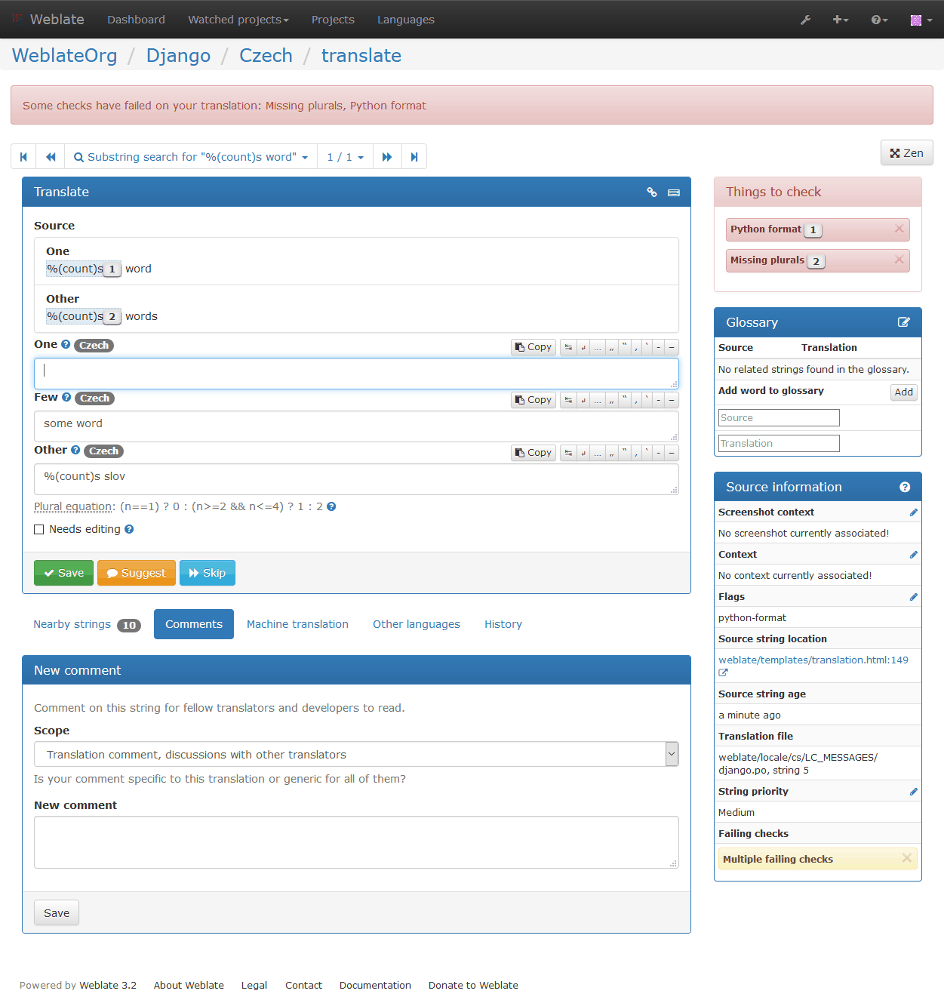
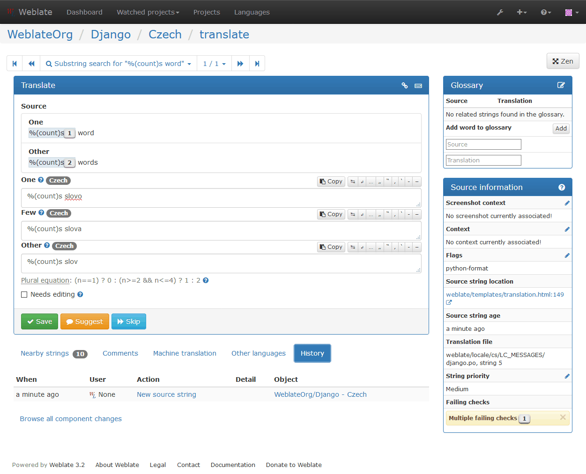

チェックと修正¶
品質チェックはよくある翻訳者の間違いを見つける手助けとなり、翻訳が質の良いものとなることを確実にします。チェックは深刻度によって3段階に分けられており、検出間違いの場合は無視することができます。
Once submitting a translation with a failing check, this is immediately shown to the user:
Automatic fixups¶
In addition to 品質チェック, Weblate can also fix some common errors in translated strings automatically. Use it with caution to not have it add errors.
参考
品質チェック¶
Weblate employs a wide range of quality checks on strings. The following section describes them all in further detail. There are also language specific checks. Please file a bug if anything is reported in error.
翻訳チェック¶
Executed upon every translation change, helping translators maintain good quality translations.
Unchanged translation¶
Happens if the source and correspanding translation strings is identical, down to at least one of the plural forms. Some strings commonly found across all languages are ignored, and various markup is stripped. This reduces the number of false positives.
This check can help find strings mistakenly untranslated.
Starting or trailing newline¶
Source and translation do not both start (or end) with a newline.
Newlines usually appear in source strings for good reason, omissions or additions can lead to formatting problems when the translated text is put to use.
Starting spaces¶
Source and translation do not both start with the same number of spaces.
A space in the beginning of a string is usually used for indentation in the interface and thus important to keep.
Trailing space¶
Checks that trailing spaces are replicated between both source and translation.
Trailing space is usually utilized to space out neighbouring elements, so removing it might break layout.
Trailing stop¶
Checks that full stops are replicated between both source and translation. The presence of full stops is checked for various languages where they do not belong (Chinese, Japanese, Devanagari or Urdu).
Trailing colon¶
Checks that colons are replicated between both source and translation, and that the they are correctly spaced. This includes rules for languages like French or Breton. The presence of colons is also checked for various languages where they do not belong (Chinese or Japanese).
Trailing question mark¶
Checks that question marks are replicated between both source and translation, and that they are correctly spaced or similar. This includes spacing rules for languages like French or Breton. The presence of question marks is also checked for various languages where they do not belong (Armenian, Arabic, Chinese, Korean, Japanese, Ethiopic, Vai or Coptic).
Trailing exclamation¶
Checks that exclamations are replicated between both source and translation, and that they are correctly spaced. This includes spacing rules for languages like French or Breton. The presence of exclamation marks is also checked for various languages where they do not belong (Chinese, Japanese, Korean, Armenian, Limbu, Myanmar or Nko).
Trailing ellipsis¶
Checks that trailing ellipsises are replicated between both source and translation.
This only checks for real ellipsis (…) not for three dots (...).
An ellipsis is usually rendered nicer than three dots in print, and sound better with text-to-speech.
Trailing semicolon¶
Checks that semicolons at the end of sentences are replicated between both source and translation. This can be useful to keep formatting of entries such as desktop files.
Maximum Length¶
Checks that translations are of acceptable length to fit available space. This only checks for the length of translation characters.
Unlike the other checks, the flag should be set as a key:value pair like
max-length:100.
Formatted strings¶
Checks that formatting in strings are replicated between both source and translation. Omitting format strings in translation usually cause severe problems, so the formatting in strings should usually match the source.
Weblate supports checking format strings in several languages. The check is not enabled automatically, only if a string is flagged appropriately (e.g. c-format for C format). Gettext adds this automatically, but you will probably have to add it manually for other file formats or if your PO files are not generated by xgettext.
This can be done per unit (see Additional information on source strings) or in コンポーネント設定. Having it defined per component is simpler, but can lead to false positives in case the string is not interpreted as a formating string, but format string syntax happens to be used.
Besides checking, this will also highligh the formatting strings to easily insert them into translated strings:
Python format¶
| Simple format string | There are %d apples |
| Named format string | Your balance is %(amount) %(currency) |
| Flag to enable | python-format |
Python brace format¶
| Simple format string | There are {} apples |
| Named format string | Your balance is {amount} {currency} |
| Flag to enable | python-brace-format |
PHP format¶
| Simple format string | There are %d apples |
| Position format string | Your balance is %1$d %2$s |
| Flag to enable | php-format |
C format¶
| Simple format string | There are %d apples |
| Position format string | Your balance is %1$d %2$s |
| Flag to enable | c-format |
Perl format¶
| Simple format string | There are %d apples |
| Position format string | Your balance is %1$d %2$s |
| Flag to enable | perl-format |
Javascript format¶
| Simple format string | There are %d apples |
| Flag to enable | javascript-format |
AngularJS interpolation string¶
| Named format string | Your balance is {{amount}} {{ currency }} |
| Flag to enable | angularjs-format |
C# format¶
| Position format string | There are {0} apples |
| Flag to enable | c-sharp-format |
Java format¶
| Simple format string | There are %d apples |
| Position format string | Your balance is %1$d %2$s |
| Flag to enable | java-format |
Java MessageFormat¶
| Position format string | There are {0} apples |
| Flag to enable | java-messageformat enables the check unconditionally |
| auto-java-messageformat enables check only if there is a format string in the source |
Missing plurals¶
Checks that all plural forms of a source string have been translated. Specifics on how each plural form is used can be found in the string definition.
Failing to fill in plural forms will in some cases lead to displaying nothing when the plural tense is in use.
Same plurals¶
Check that fails if some plural forms duplicated in the translation. In most languages they have to be different.
Inconsistent¶
Weblate checks translations of the same string across all translation within a project to help you keep consistent translations.
The check fails on differing translations of one string within a project. This can also lead to inconsistencies in displayed checks. You can find other translations of this string on the All locations tab.
Has been translated¶
Means a string has been translated already. This can happen when the translations have been reverted in VCS or lost otherwise.
Mismatched \n¶
Usually escaped newlines are important for formatting program output.
Check fails if the number of \\n literals in translation do not match the source.
Mismatched BBCode¶
BBCode represents simple markup, like for example highlighting important parts of a message in bold font, or italics.
This check ensures they are also found in translation.
注釈
The method for detecting BBcode is currently quite simple so this check might produce false positives.
Zero-width space¶
Zero-width space (<U+200B>) character are used to truncate messages within words.
As they are usually inserted by mistake, this check is triggered once they are present in translation. Some programs might have problems when this character is used.
XML tags mismatch¶
This usually means the resulting output will look different. In most cases this is not desired result from changing the translation, but occasionally it is.
Checks that XML tags are replicated between both source and translation.
Source checks¶
Source checks can help developers improve the quality of source strings.
Optional plural¶
The string is optionally used as a plural, but does not use plural forms. In case your translation system supports this, you should use the plural aware variant of it.
For example with Gettext in Python it could be:
from gettext import ngettext
print ngettext('Selected %d file', 'Selected %d files', files) % files
Ellipsis¶
This fails when the string uses three dots (...) when it should use an ellipsis character (…).
Using the Unicode character is in most cases the better approach and looks better rendered, and may sound better with text-to-speech.
Multiple failing checks¶
Numerous translations of this string have failing quality checks. This is usually an indication that something could be done to improving the source string.
This check failing can quite often be caused by a missing full stop at the end of a sentence, or similar minor issues which translators tend to fix in translation, while it would be better to fix it in the source string.